Welcome to the deep dive! Here, we explore specific welding processes, looking at how they work, where they're used in the real world, and the key parameters that a welder or engineer can adjust to get the perfect weld.
Arc Welding Processes
These processes all use an electric arc as the heat source to melt and join metal.
Shielded Metal Arc Welding (SMAW) - "Stick Welding"
SMAW is the rugged workhorse of the welding world. It uses a consumable electrode "stick" coated in a flux. The arc melts the electrode and the flux, which creates a shielding gas and a protective slag layer over the weld. It's simple, portable, and versatile.
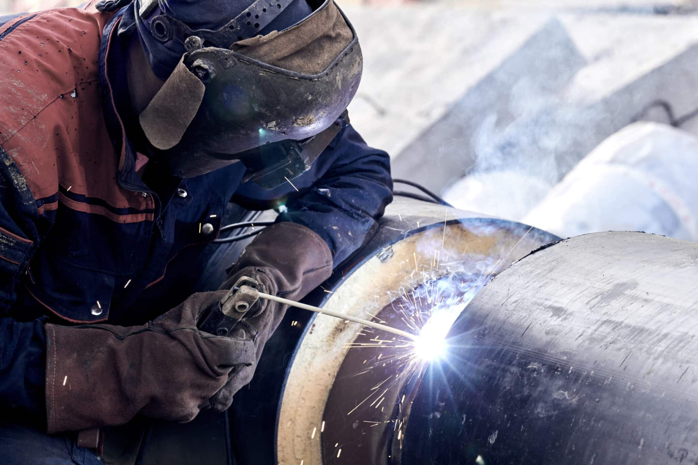 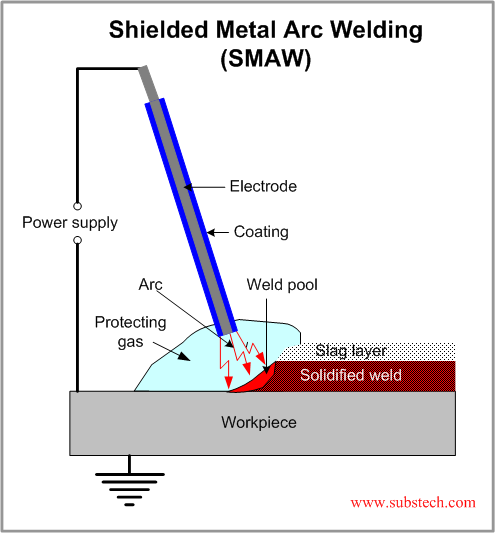Practical Example: The Farm Repair
Imagine the steel frame on a farm tractor cracks in the middle of a field. A welder can bring a portable SMAW machine, which doesn't require a separate gas tank, and make a strong repair right there, even in windy conditions, because the flux provides robust shielding.
Key Parametric Influences:
- Amperage (Current): This is the main control for heat. Too low, and the weld won't penetrate; too high, and you can burn through the metal.
- Travel Speed: How fast you move the electrode along the joint. Moving too fast creates a narrow, weak weld; too slow creates a wide, oversized weld that can overheat the part.
- Electrode Angle: The angle of the stick relative to the workpiece, which influences the shape of the weld bead.
Stud Arc Welding
This is a highly specialized process used to weld a metal fastener, like a threaded stud or a pin, onto a base metal part in a fraction of a second. A special "gun" holds the stud, creates an arc to melt the base of the stud and the workpiece, then plunges the stud into the molten pool.
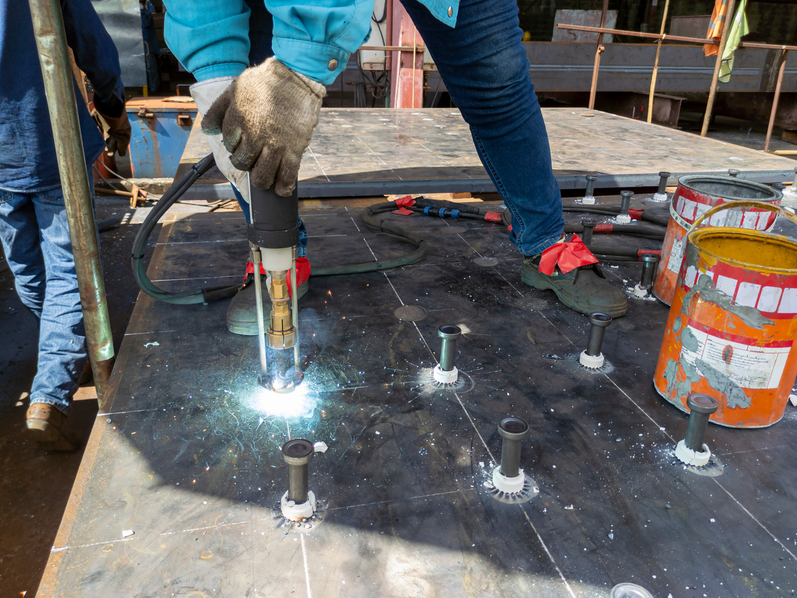 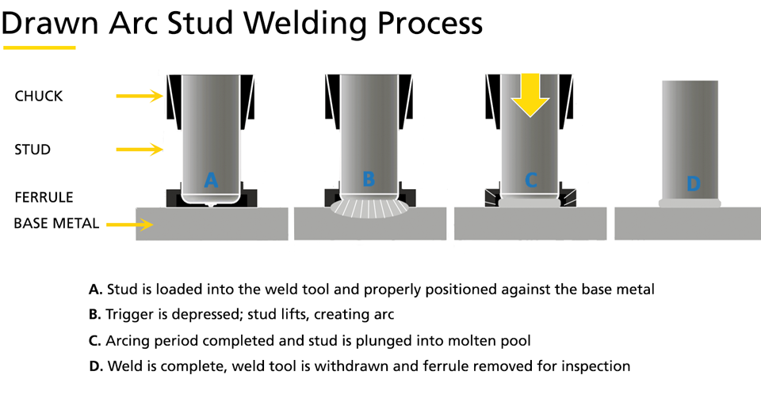Practical Example: Building a Bridge Deck
When building a bridge, thousands of threaded studs are welded onto the tops of the massive steel girders. The concrete bridge deck is then poured over these studs, which act as anchors, locking the steel and concrete together into a single, strong composite structure.
Key Parametric Influences:
- Weld Time & Current: These are precisely controlled to create just enough melt for a perfect fusion without excess heat. The process is often automated.
- Plunge Depth: How far the stud is pressed into the molten metal.
Submerged Arc Welding (SAW)
SAW is the heavy-duty industrial powerhouse. Instead of a gas or light flux, the arc is completely "submerged" under a thick blanket of granular flux. This results in extremely high deposition rates, deep penetration, and a high-quality weld with no sparks, spatter, or arc flash.
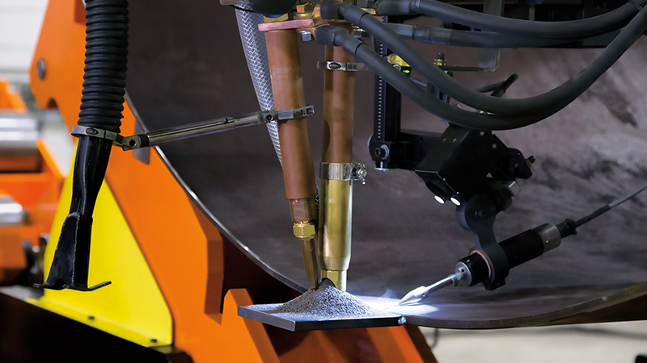 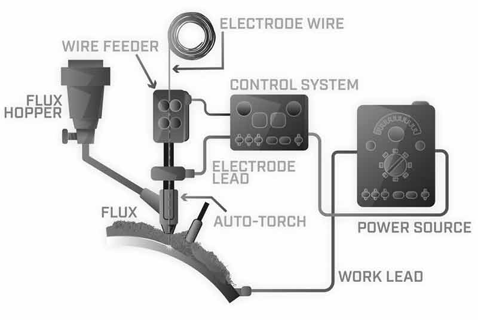Practical Example: Making a Pressure Vessel
To fabricate a massive, thick-walled steel tank for a power plant, the long, straight seams must be exceptionally strong. An automated SAW machine travels along the joint, pouring flux and feeding wire, creating a perfect, deep weld in a single pass that would take a manual welder hours to complete.
Key Parametric Influences:
- Voltage & Wire Feed Speed (Current): These two parameters work together to control the arc length and deposition rate.
- Travel Speed: Determines the size and penetration of the weld bead. Because of the high heat, this is a fast process.
Gas Metal Arc Welding (GMAW/MIG) & Pulsed GMAW (GMAW-P)
Commonly known as MIG welding, GMAW is the factory favorite. It uses a continuously fed solid wire electrode and a shielding gas from a bottle. It's fast, clean, and easy to automate. Pulsed GMAW (GMAW-P) is an advanced version where the current rapidly switches between a high peak and a low background level. This gives better control over the heat, making it perfect for thin materials and out-of-position welding.
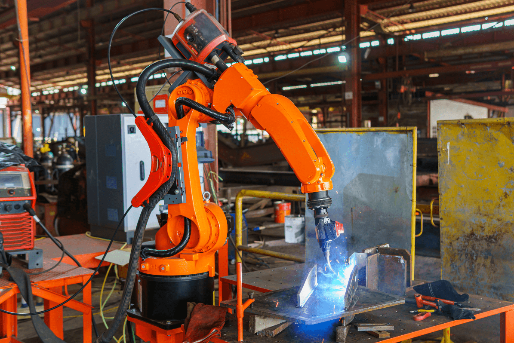 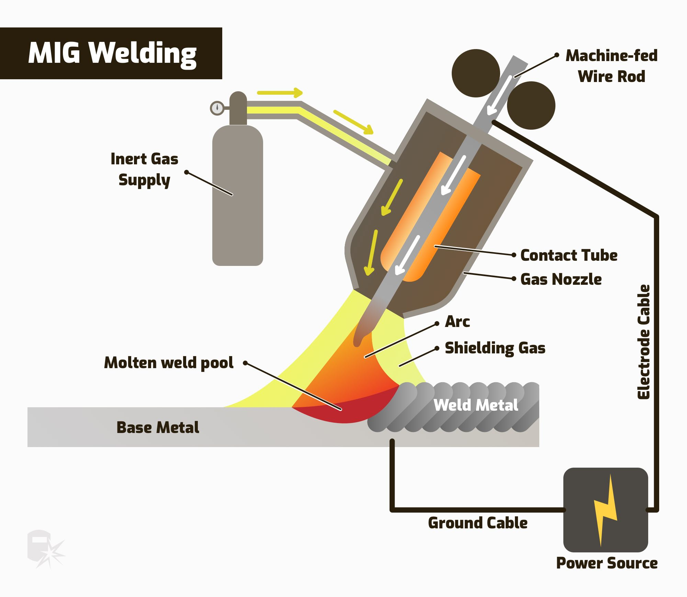Practical Example: Car Manufacturing & Aluminum Boats
GMAW: On a car assembly line, robotic arms use GMAW to weld chassis components with speed and consistency. GMAW-P: To build an aluminum fishing boat, a welder uses Pulsed MIG. The pulsing action allows them to create a strong weld without warping or melting through the thin, heat-sensitive aluminum sheets.
Key Parametric Influences:
- Voltage & Wire Feed Speed: The primary controls for the arc and weld bead profile.
- Gas Flow Rate: Must be high enough to protect the weld from air but not so high that it creates turbulence.
- Pulse Parameters (for GMAW-P): Peak current, background current, and pulse frequency are adjusted to fine-tune heat input.
Flux-Cored Arc Welding (FCAW)
FCAW is like a hybrid of Stick and MIG welding. It uses a continuously fed wire like MIG, but the wire is hollow and filled with flux. This provides the shielding ("self-shielded" FCAW) or supplements a shielding gas ("gas-shielded" FCAW). It offers high deposition rates and is great for outdoor use.
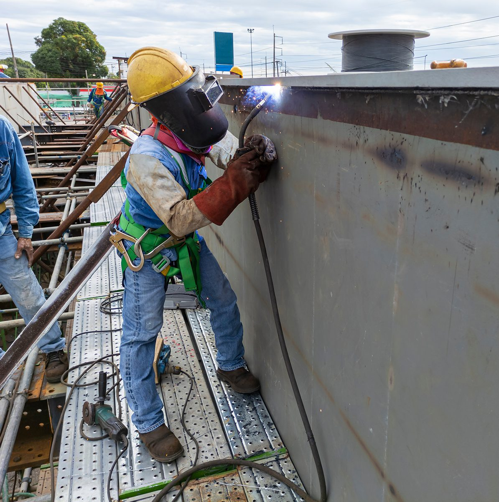 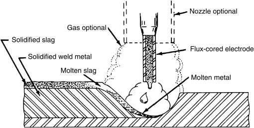Practical Example: Skyscraper Construction
On a high-rise construction site, ironworkers use FCAW to weld the massive structural steel beams together. The process is fast and the self-shielded wires are not affected by the wind, making it far more productive than SMAW for these heavy-duty applications.
Key Parametric Influences:
- Voltage & Wire Feed Speed: Similar to GMAW, these control the process.
- Electrode Stick-out: The length of wire extending from the contact tip, which affects the current and penetration.
Gas Tungsten Arc Welding (GTAW/TIG) & Pulsed GTAW (GTAW-P)
Known as TIG, this is the artist's tool of welding. It uses a non-consumable tungsten electrode to create the arc, and the welder uses their other hand to carefully feed a separate filler rod. It is slow and requires great skill, but it produces the highest quality, most precise, and cleanest welds. Pulsed TIG (GTAW-P), like Pulsed MIG, provides ultimate control over heat for welding exceptionally thin or exotic materials.
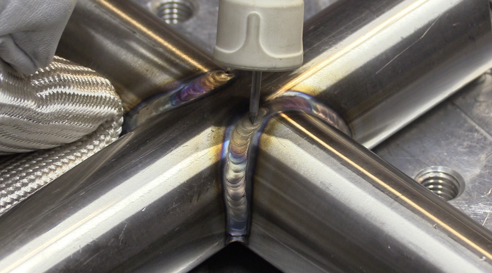 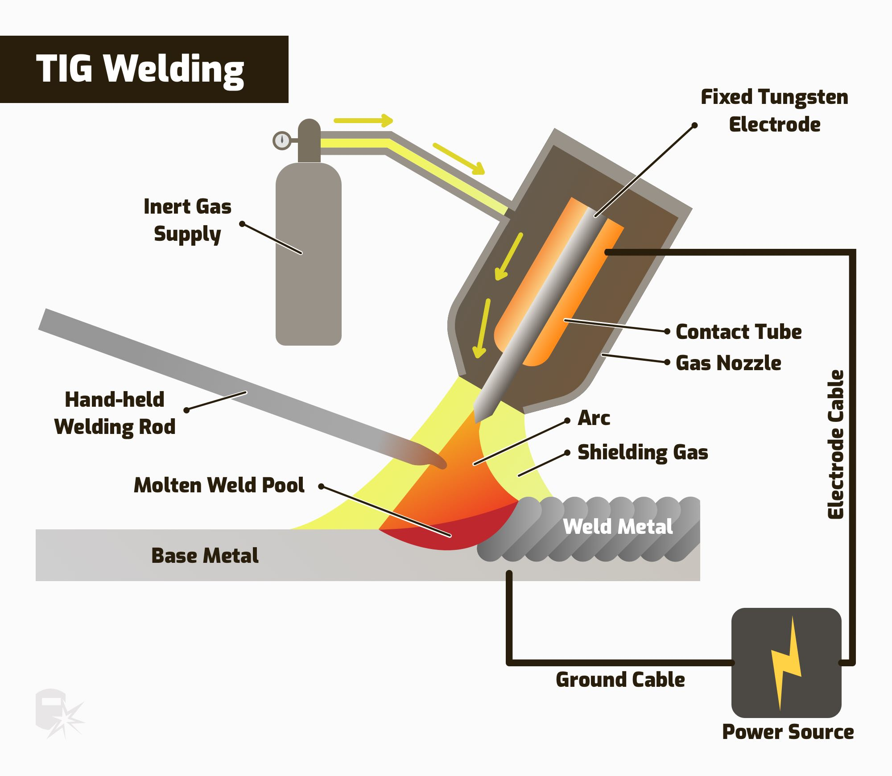Practical Example: Aerospace and Food Grade Piping
To weld a critical titanium component for a jet engine, a welder uses GTAW-P to ensure a perfect, pure weld with minimal heat distortion. In a dairy, sanitary stainless steel pipes are welded with GTAW to create a smooth internal bead that won't trap bacteria.
Key Parametric Influences:
- Amperage: Controlled with a foot pedal or finger switch, allowing the welder to adjust heat on the fly.
- Gas Flow Rate: Crucial for protecting the tungsten electrode and the weld pool. Argon is common.
- Pulse Parameters (for GTAW-P): Gives fine control over the weld puddle for delicate work.
Resistance Welding Processes
These processes use electrical resistance as the heat source. The parts are clamped together, a powerful current is passed through them, and heat is generated at the interface to form the weld.
Spot, Seam, and Projection Welding
These are closely related processes, often called the "kings of sheet metal."
- Spot Welding: Creates a single, small "spot" weld by clamping the material between two copper electrodes.
- Seam Welding: Replaces the pointy electrodes with copper wheels. As the material is fed between the wheels, a series of overlapping spot welds is created, forming a continuous, leak-proof seam.
- Projection Welding: A clever variation where small projections or dimples are stamped into one of the workpieces. When the parts are pressed together between flat electrodes, the current is concentrated through these projections, forming multiple, precisely located welds all at once.
Practical Example: A Car Body, a Fuel Tank, and a Bracket
Spot: The body of a car is held together by thousands of individual spot welds. Seam: A car's metal fuel tank is welded using seam welding to guarantee a leak-proof joint. Projection: To attach a nut to a car's frame, the nut is made with small projections on its base. It's placed on the frame and welded in a single hit using projection welding, which is much faster than welding it by hand.
Key Parametric Influences:
- Current: The amount of electrical energy.
- Weld Time: How long the current is applied (often just cycles of AC power).
- Electrode Force: The pressure used to squeeze the parts together. These three must be in perfect balance.
Solid State Welding Processes
This fascinating group of processes joins materials without melting them. Instead, they use a combination of heat and immense pressure to force the atoms of the two pieces to bond at a molecular level.
Forge and Friction Welding
Forge Welding is the original method, where a blacksmith heats metal to a glowing hot, plastic-like state and hammers it together. Friction Welding is the modern, high-tech version. One part is spun at high speed and then forced against a stationary part. The intense friction creates the heat, and when the parts are hot enough, the spinning stops and the pressure is increased to forge them together.
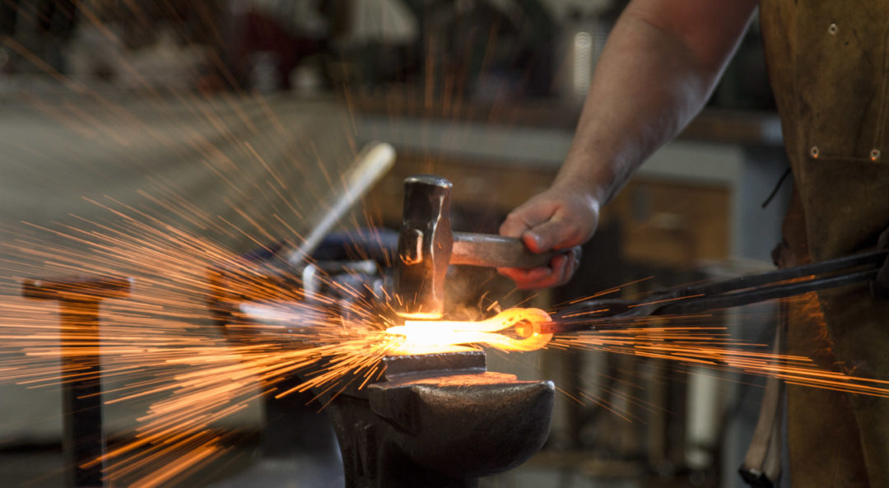 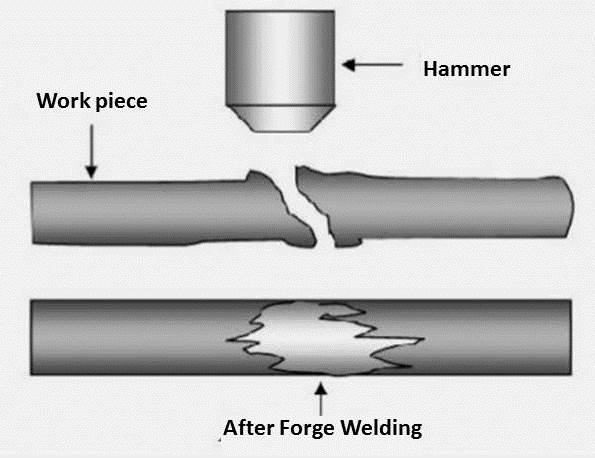Practical Example: An Engine Valve
The head of an engine valve needs to be made from a super-tough, heat-resistant alloy, while the stem can be a less expensive, durable steel. These two different metals are joined perfectly using friction welding to create a single, high-performance part.
Key Parametric Influences:
- Forge Welding: Metal Temperature, Hammering Force.
- Friction Welding: Rotational Speed, Friction Pressure/Time, Forge Pressure.
Friction Stir Welding (FSW)
FSW is a revolutionary solid-state process. A hard, non-consumable rotating tool with a pin is plunged into the joint line between two clamped pieces. The tool's rotation generates friction, which softens (but doesn't melt) the material. As the tool travels along the joint, it literally "stirs" the softened material together, creating a high-quality, forged weld behind it.
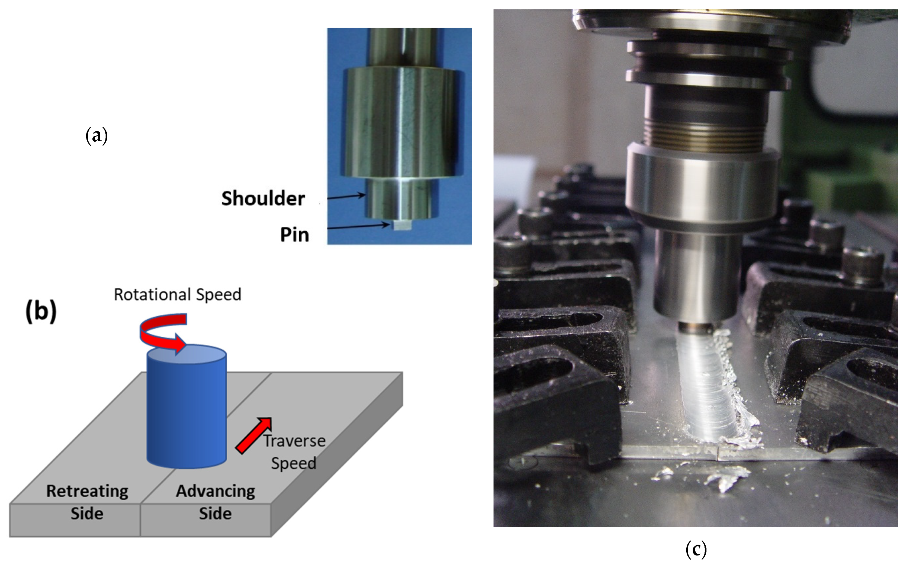Practical Example: Building the Space Shuttle's Fuel Tank
The massive external fuel tank for the Space Shuttle was built from large aluminum alloy panels. FSW was used because it produces exceptionally strong and lightweight welds with no defects, which is absolutely critical for aerospace applications. It's also used heavily in building modern aircraft and high-speed trains.
Key Parametric Influences:
- Tool Rotational Speed (RPM): Controls the heat input.
- Travel Speed: How fast the tool moves along the joint.
- Tool Plunge Depth/Force: Ensures the tool is at the correct depth to properly stir the material.
Diffusion and Roll Welding
Diffusion Welding bonds materials by applying high pressure at an elevated temperature in a vacuum. The atoms on the surfaces "diffuse" across the joint, creating a perfect bond. Roll Welding is used to join large sheets of metal. The sheets are stacked, heated, and then passed through heavy rollers, which apply immense pressure to squeeze and weld them together.
Practical Example: Making a U.S. Quarter
A U.S. quarter isn't solid silver-colored metal. It's a "sandwich" of copper-nickel on the outside and pure copper on the inside. These layers are bonded together in massive sheets using roll welding before the coins are ever stamped out. This process is called cladding.
Key Parametric Influences:
- Diffusion Welding: Temperature, Pressure, Time (in a vacuum).
- Roll Welding: Temperature, Roll Pressure (Reduction in Thickness).